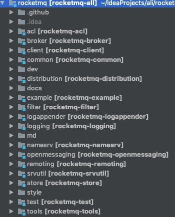

RocketMQ基于主体的发布订阅模式，核心功能包括: 消息发送、消息存储Broker、消息消费。
自研NameServer充当注册中心，实现元数据管理(Tocpic路由信息等)，Topic路由信息无须再集群之间保持强一致，追求最终一致性，能够容忍分钟级的不一致。基于此，NameServer之间不会互相通信因此对网络的要求降低了，同时对比zk性能也有很大的提升。
高效的IO存储机制RocketMQ准求消息发送的高吞吐量，存储文件设计成文件组的概念，组内单个文件大小固定，方便内存映射机制，所有的消息存储基于顺序写，极大的提供了消息的写性能，同时兼容消息消费查找，引入消息消费队列文件和索引文件。
适当将某些工作下发给RocketMQ使用者我们进场会遇到类似的问题，如何确保消息一定被消费，并且只保证消息消费一次。RocketMQ在设计实现中，只会保证消息被消费者消费但不会保证只消费一次，将不重复消费下发给使用者自行解决，因此设计起来简单高效。
RocketMQ源码结构

- borker: borker模块(borker启动进程)
- client: 消息客户端，包含消息生产者、消息消费者相关类
- common: 公共包
- dev: 开发者信息
- distribution: 部署实例文件件
- example: RocketMQ示例代码
- filter: 消息过滤相关基础类
- filtersrv: 消息过滤服务器实现相关类(Filter启动进程)
- logappender: 日志相关实现类
- namesrv: NameServer实现相关类(NameServer启动进程)
- openmessaging: 消息开放标准
- remoting: 远程通信模块，基于netty
- srvutil: 服务器工具类
- store: 消息存储实现相关类
- style: checkstyle实现相关类
- test: 测试相关类
- tools: 工具类，监控命令相关实现类
设计目标
- 架构模式，采用发布订阅模式，主要组件包含: 消息发送者、消息服务器(存储消息)、消息消费、路由发现。
- 顺序消息, 严格保证消息有序
- 消息过滤, 支持服务端客户端过滤，服务端过滤只将客户端感兴趣的消息推送给消费者，客户端过滤会有无用消息。
- 消息存储, 消息存储有两个维度的考量，消息堆积能力以及消息存储性能，RocketMQ追求消息存储的高性能，引入内存映射机制，所有主题的消息顺序存储在一个文件中，同时为了避免消息在存储服务器中累计，引入消息文件过期机智与文件存储空间报警。
- 消息高可用, 针对Broker正常关机、Broker异常Crash、OS Crash、机器断电但是能立即回复供电的情况RocketMQ在同步刷盘的情况下可以保证不丢失消息，在异步刷盘的情况下会丢失少量消息。针对机器无法开机、磁盘设备损坏一旦发生消息将全部丢失，如果开启了异步复制机制，保证之丢失少量消息，同时后续会引入双写机制保证消息可靠性极高的场景。
- 消息消费低延迟， 保证在不发生消息堆积的时候，以长轮序模式实现准实时的消息推送模式。
- 确保消息必须被消费一次, 通过消息的ACK机制保证消息至少被消费一次，但由于ACK可能会丢失无法做到只消费一次，有重复消费的可能。
- 回溯消息， 回溯消息是指消息消费端已经消费成功的消息，由于业务要求需要重新消费RocketMQ支持按时间回溯消息，时间维度可以精确到毫秒，可以向前或者向后回溯。
- 消息堆积，RocketMQ消息存储采用磁盘文件内存映射机智，并且在物理布局上位多个大小相等的文件组成逻辑文件组，可以无限循环使用。RocketMQ消息存储文件并不是永久存储在消息服务端，而是提供了默认过期机制，默认保留3天。
- 定时消息， 支持特定延迟级别。
- 消息重试机制，消息重试是指消息在消费时，如果发送异常，消息中间件需要支持消息重新投递，RocketMQ支持消息重试机制。